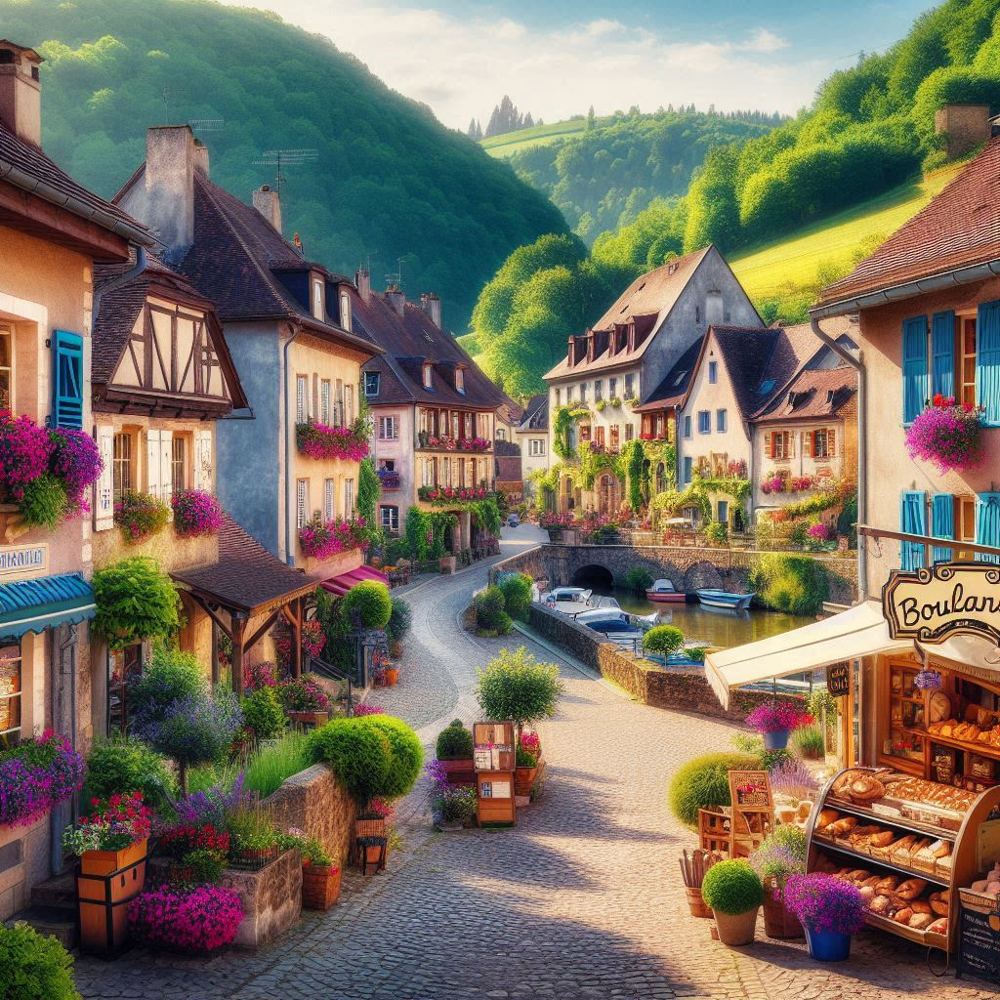

Benjamin FERRANDEZ
Developpeur Site internet depuis 1554Un village
Au cœur d’une campagne verdoyante, une petite maison en pierre repose paisiblement, entourée de champs ondulants et de grands arbres. Le chant des oiseaux et le murmure d’un ruisseau proche bercent l’atmosphère. Une terrasse en bois, ornée de fleurs sauvages, invite à la contemplation des collines à l’horizon. Ici, le temps semble ralentir, offrant un havre de sérénité loin de l’agitation du monde. 12 Rue des Lilas54321 Ville-sur-Mer
France

Mon curriculum vitae
- L'Emmerdeur (1973) : Jacques Brel
- Les Compères (1983) : Pierre Richard
- Les Fugitifs (1986) : Pierre Richard
- Le Dîner de cons (1998) : Jacques Villeret
Mes hobbies
- constuction en allumettes :
- La tour effeil
- la gare de Lyon
- imitation :
- producteur belge
- Jacques Chirac
Qualités personnelles
Je suis souvent invité à des diners.